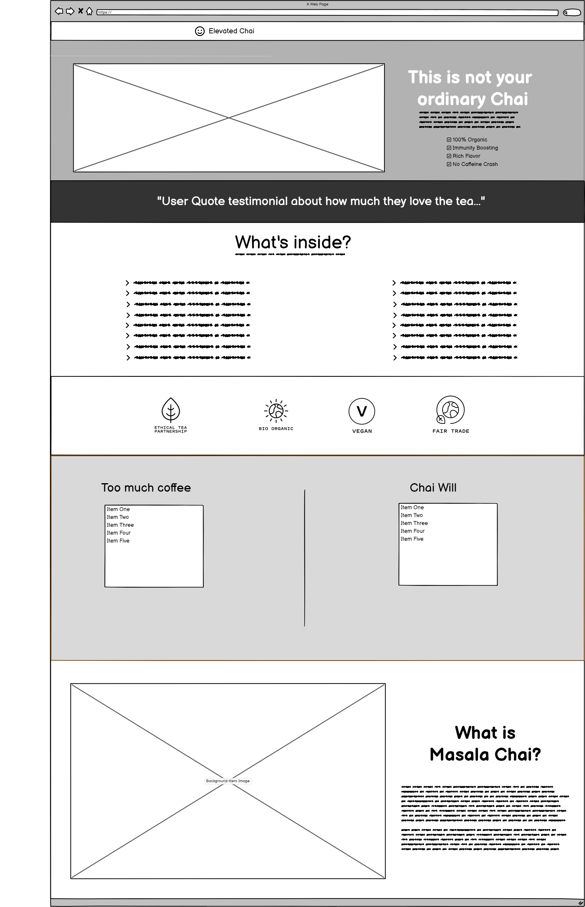
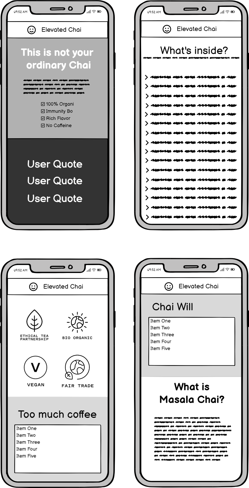

My site will be one page, and will consist of the following sections:
About the Chai Intro Section - “Not your ordinary chai” - Summary paragraph of why this tea differs, with some high-level benefits. Get them interested when they first land on the page
User Testimonial - User quote adding some credibility and personal experience.
What’s inside - List of all the ingredients and their health benefits. This will show how it’s different from other chai and focus on its health-giving properties. This will be core area to drill into all the benefits of this tea. Each ingredient name has a description nested in a collapsed item so that it stays compact and the page doesn’t get too long. A user can expand and collapse by clicking on an ingredient.
Tea Attributes - Health and Eco conscious consumers wanting to know that this product aligns with their values. Image symbols in a row to visually show this product is - Organic, Vegan, and Fair Trade.
Coffee/chai comparison grid - Bullets listing the downsides of drinking coffee and the comparative benefits of switching to Chai. This will help the user understand the down sides of drinking coffee and how this chai solves their problem.
What is Masala Chai? - Paragraph or two explaining what it is, and what "masala" and "chai" really means and where it comes from.

